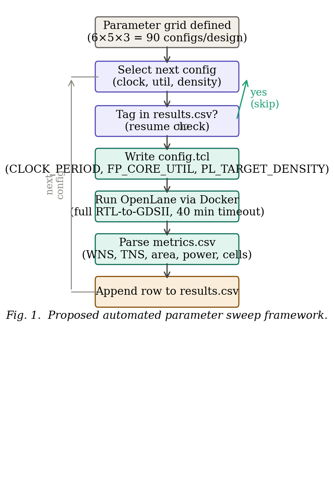
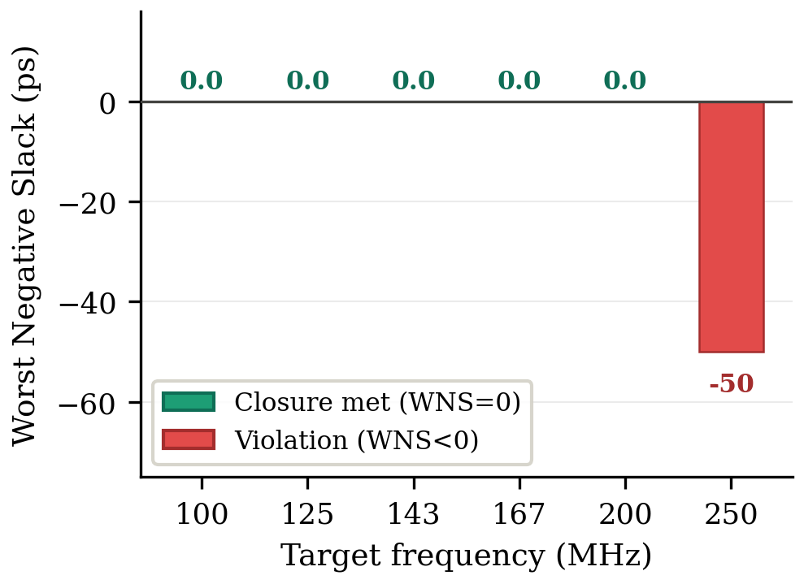
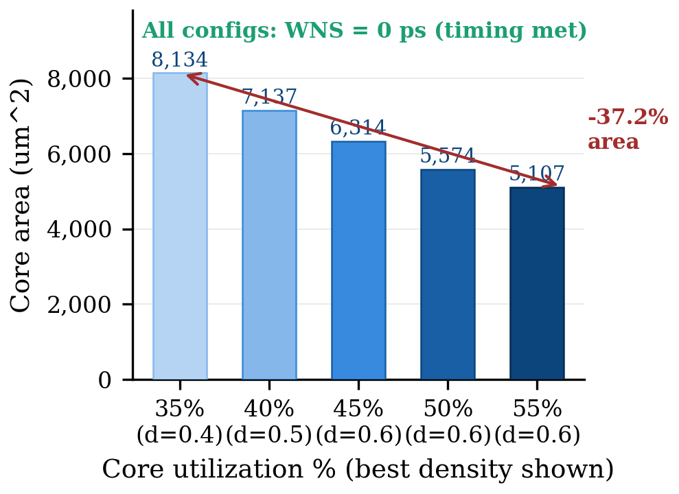
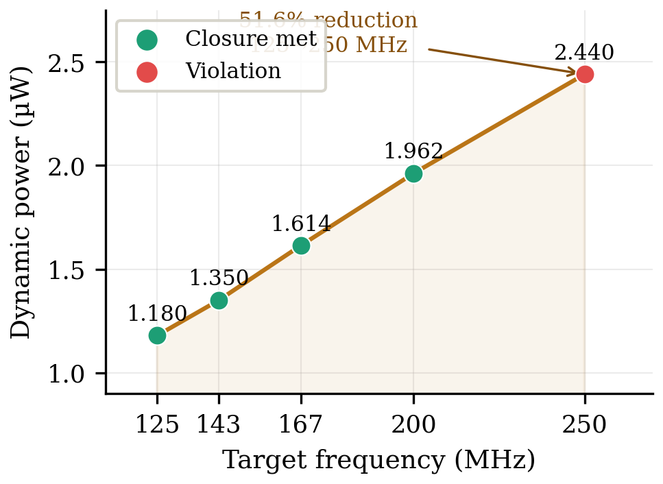

📖 Abstract
Timing closure in open-source RTL-to-GDSII flows requires iterative manual adjustment of physical design parameters—a process that is time-consuming and experience-dependent. This paper presents an automated grid search framework that systematically explores the parameter space of the OpenROAD/OpenLane flow targeting the SkyWater 130 nm PDK (SKY130A). The framework varies three key configuration parameters—clock period, core utilization, and placement target density—across a structured 6×5×3 grid, executing each combination as a complete RTL-to-GDSII run. Experiments on the spm benchmark reveal a sharp timing closure boundary: all configurations achieve closure at 200 MHz while all fail at 250 MHz. The framework further characterizes a 37.2% area reduction opportunity and confirms linear power–frequency scaling.
🎯 Key Contributions
Automated Grid Search
Python-based orchestration of 90 full OpenLane Docker runs without any human intervention, with deterministic run tagging for resume support.
Metrics Extraction Pipeline
Parses OpenLane timing reports to extract WNS, TNS, post-SPEF WNS, core area, cell count, critical path delay, and power after each run.
Timing–Area–Power Tradeoff
Quantitative characterization of the full design space for the spm benchmark on SKY130A, establishing the closure boundary at 200 MHz.
Open Source Release
All sweep scripts, configuration files, and raw results released publicly to enable full reproducibility of the experiments.
📈 Timing Closure Results
| Clock (ns) | Frequency (MHz) | Best WNS (ps) | Area (μm²) | Status |
|---|---|---|---|---|
| 10.0 | 100 | 0.0 | 7,136 | ✅ Closed |
| 8.0 | 125 | 0.0 | 8,134 | ✅ Closed |
| 7.0 | 143 | 0.0 | 8,134 | ✅ Closed |
| 6.0 | 167 | 0.0 | 8,134 | ✅ Closed |
| 5.0 | 200 | 0.0 | 8,134 | ✅ Closed |
| 4.0 | 250 | −50 | 5,107–8,134 | ❌ All Fail |
🖼️ Figures




⚙️ Parameter Search Space
Full Cartesian product: 6 × 5 × 3 = 90 unique configurations per design, each a complete RTL-to-GDSII run.